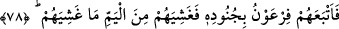

DENİZDE BİR YOL AÇ
77. Andolsun ki biz Mûsâ’ya: Kullarımla birlikte geceleyin yola çık da (size)
yetişilmesinden korkmaksızın ve (boğulmaktan) endişe etmeksizin onlara denizde
kuru bir yol aç, diye vahyetmiştik.
78. Bunun üzerine o, askerleri ile birlikte onların peşine düştü. Deniz onları
gömüp boğuverdi.
79. Fir’avn, kavmini saptırdı, doğru yola sevketmedi.
“Andolsun ki biz Mûsâ’ya:” el-İrşad’da belirtildiği üzere “Vallahi biz Mûsâ’ya
yaklaşık yirmi sene içerisinde dokuz mûcizeyi gösterdikten sonra şöyle vahyettik:
Fakir (Bursevî) der ki: “Bu bilgi, bazı meşhur rivayetlerle çelişmektedir. “(Allah):
“Duanız kabul olundu,” dedi, doğru olun, bilmezlerin yoluna uymayın.” (Yûnus,
10/89) âyeti ile nakledilen rivâyetlere göre Mûsâ (a.s.), Fir’avn ve kavmi hakkında duâ
etti ve onun duâsına icâbet edildi. Ancak bu icabetin neticesi kırk yıl sonra görüldü.
“Kullarımla” İsrâiloğulları ile “birlikte geceleyin” Mısır’dan “yola çık da (size)
yetişilmesinden korkmaksızın” düşmanın size yetişemeyeceğinden emin olarak “ve”
boğulmaktan “endişe etmeksizin onlara denizde kuru bir yol aç, diye vahyetmiştik.”
Fir’avn’un adamları onları engellemesin diye Cenâb-ı Hak, Hz. Mûsâ (a.s.)’a
İsrailoğulları’nı geceleyin götürmesini emretmiştir.
“ (deniz)” çok su toplayan her geniş mekâna denir. Burada kasdedilen Kızıldeniz
(deniz)” çok su toplayan her geniş mekâna denir. Burada kasdedilen Kızıldeniz
(Buhru’l-Kulzüm)’dir. el-Kâmûs’ta şöyle der: “Kulzüm, Mısır ile Mekke arasında Tûr
dağı yakınında bir yerdir. Kızıldeniz ona izâfe edilir. Çünkü onun bir ucundadır. Ya da
Kızıldeniz (Bahru’l-Kulzüm) kendisine açılanları yuttuğu için ona bu isim verilmiştir.
“, daha önce üzerinde bulunan su çekildikten sonra kuruyan, su ve çamur
bulunmayan yere denir.
78. Bunun üzerine o, askerleri ile birlikte onların peşine düştü. Deniz onları